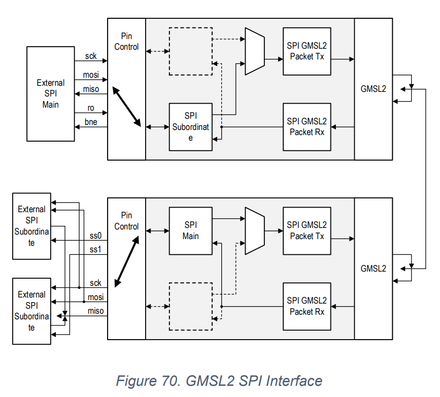
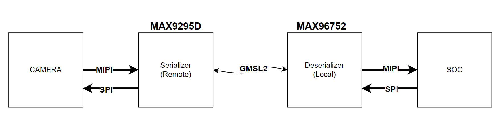
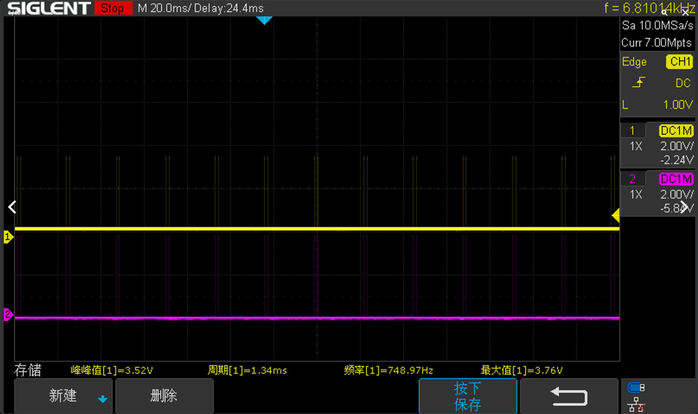
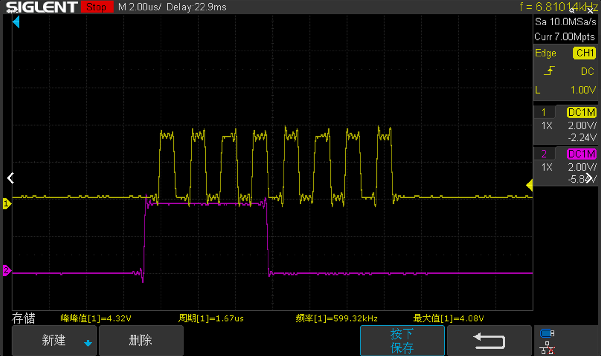
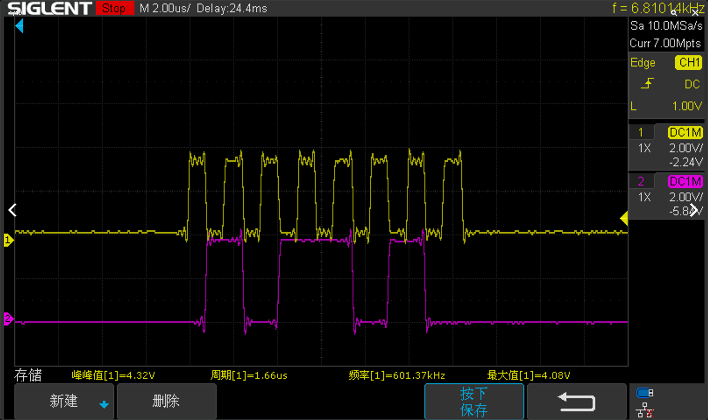
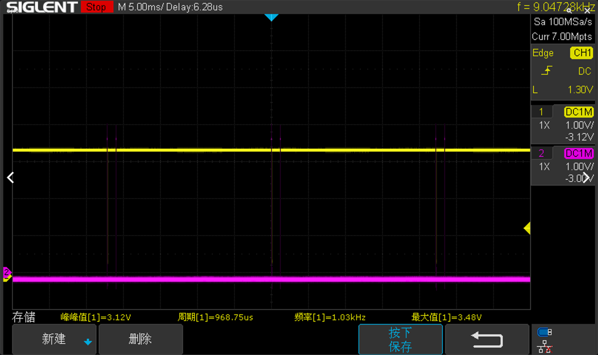
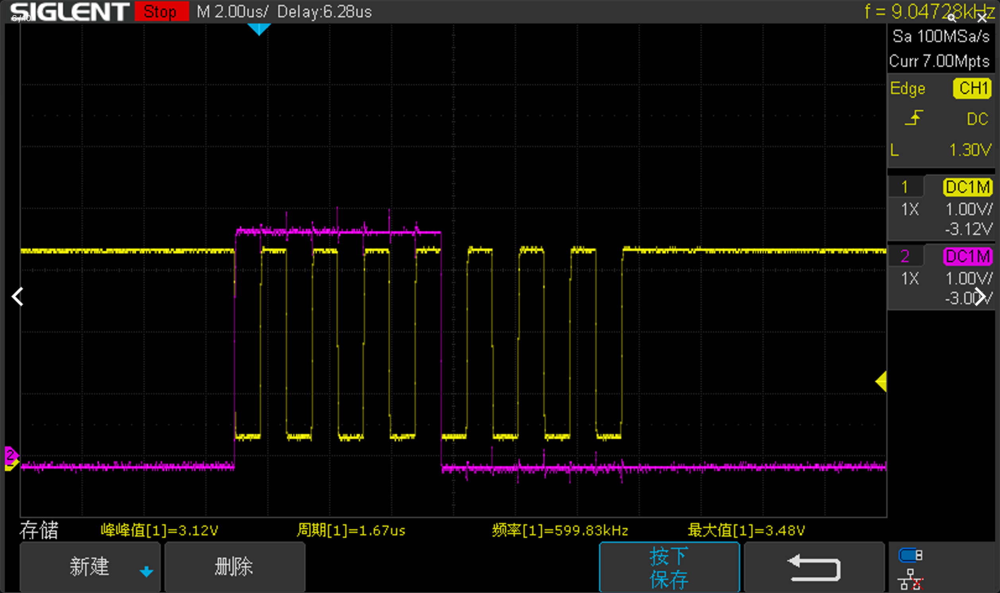
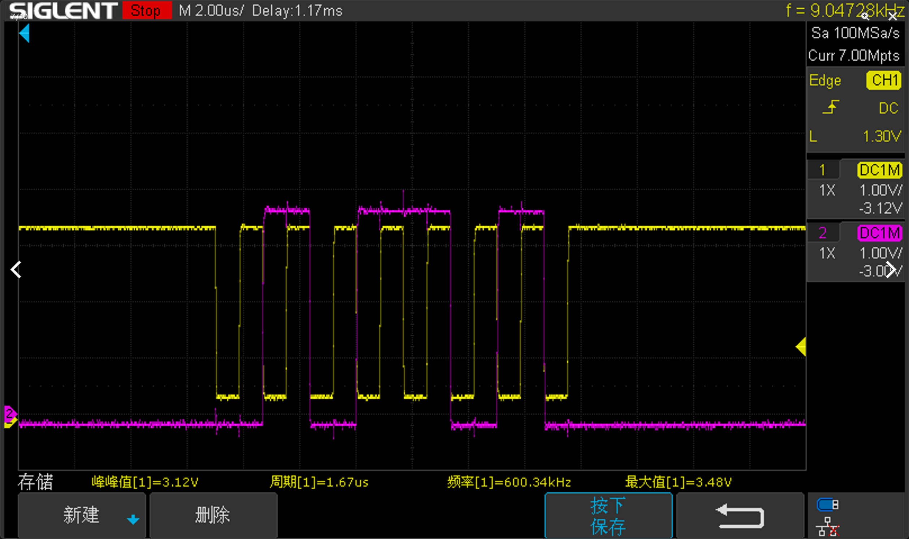
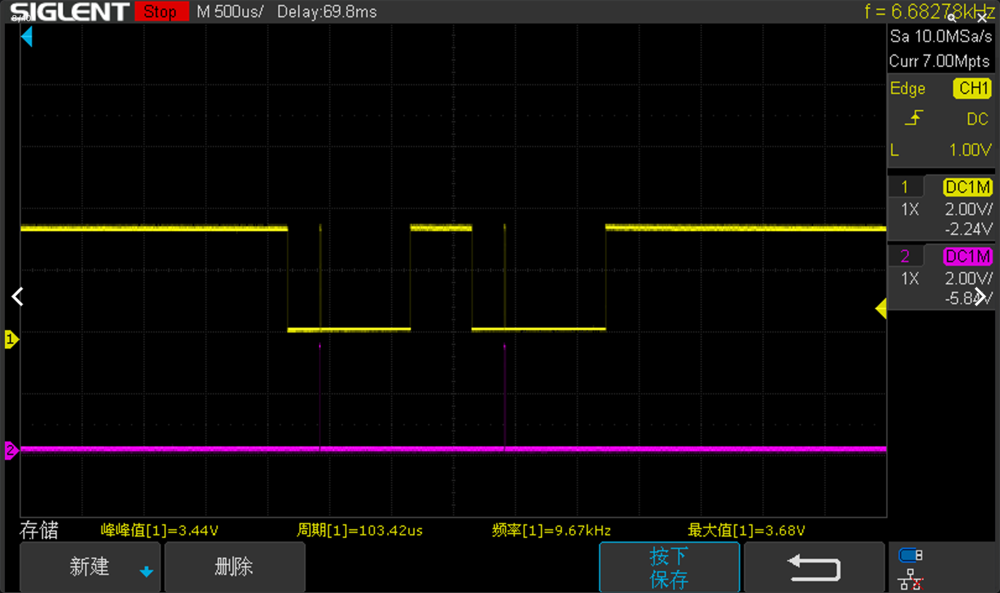

ADI GMSL2 SERDES SPI
https://www.analog.com/media/en/technical-documentation/user-guides/gmsl2-general-user-guide.pdf
https://www.analog.com/media/en/technical-documentation/data-sheets/max96752.pdf
https://www.analog.com/media/en/technical-documentation/data-sheets/max9295d.pdf
GMSL2 General User Guide
Key Features
• Four-wire main (connects to remote peripheral) or four-wire subordinate (connects to µC/SoC).
• Remote-side SPI bus supports SPI modes 0 or 3; local-side SPI bus supports SPI mode 0.
• Device filtering on (multiple SPI interfaces with different SPI IDs) or off (point-to-point SPI interface).
• Subordinate Select active low or high.
• 600kHz to 25MHz or 50MHz SPI clock (depending on device).
• MSB first (for control commands).
• Pin or I2C control of RO and BNE input/output.
18.Serial Peripheral Interface

18.3.3.1 SPI Burst Write
- Set RO.
- Send 0xA0 (Set SPI Target = 0, optional if only one device).
- Send 0xA4/A5 (Assert SS1/SS2).
- Clear RO.
- Send Cmd Byte (Read/Write and Address MS bit).
- Send Addrs Byte.
- Send Write Byte.
- Set RO.
- Wait for BNE = 1.
- Send 0xA6/Read Byte (Discard).
- Clear RO.
- Repeat 7 - 11 until all data is written.
- Set RO.
- Wait for BNE = 1.
- Send 0xA6/Read Byte (Discard) (Clear SS).
- Send 0xA6/Read Byte (Discard) (Clear SS).
18.3.3.2 SPI Burst Read
- Set RO.
- Send 0xA0 (Set SPI Target = 0, optional if only one device).
- Send 0xA4/A5 (Assert SS1/SS2).
- Clear RO.
- Send Cmd Byte (Read/Write and Address MS bit).
- Send Addrs Byte.
- Set RO.
- Wait for BNE = 1.
- Send 0xA7/Read Byte (Read Data) (Discard first two reads, remaining are valid).
- Repeat Steps 8 - 9 until all but two bytes are read.
- Wait for BNE = 1.
- Send 0xA6/Read Byte (Valid Data) (Clear SS).
- Send 0xA6/Read Byte (Last Valid Data) (Clear SS).
硬件框图

SPI 初始化
详细寄存器描述可以参考官网提供的 DataSheet
| Index | Device | Reg | Value | Desc |
|---|---|---|---|---|
| 1 | MAX9295D | 0x173 | 0xFA | |
| 2 | MAX9295D | 0x174 | 0xFA | SCK 600KHz |
| 3 | MAX9295D | 0x175 | 0xFA | SCK 600KHz |
| 4 | MAX9295D | 0x176 | 0x0C | |
| 5 | MAX96752 | 0x4E6 | 0x03 | 0x4E6 0x4F6 |
| 6 | MAX96752 | 0x4E9 | 0x00 | 0x4E9 0x4F9 |
| 7 | MAX9295D | 0x172 | 0x00 | #SPI mode 0 |
| 8 | MAX96752 | 0x4E0 | 0x09 | 0x4E0 0x4F0 |
| 9 | MAX9295D | 0X170 | 0X0B |
SPI mode 0 的波形



SPI mode 3 配置
0x172 设置 0x0C OK



错误的配置：0x172 设置 0x04
